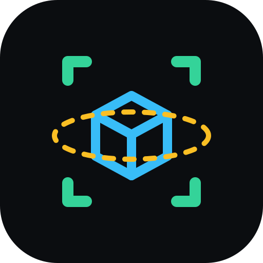

0/0
Carregando…
Enquadramento
Ângulo
Altura
Nível
Carregando IA…
—
—

Fotos de produto padronizadas em 3:4 com guia de enquadramento e de ângulo — e captura em anéis para gerar modelos 3D.
Permita o acesso à câmera e aos sensores de movimento. Funciona em HTTPS (ou localhost).
Dica: toque num objeto destacado no visor para travá‑lo. Toque fora para destravar. Se o objeto não for reconhecido pela IA, use apenas o quadro‑alvo como guia.